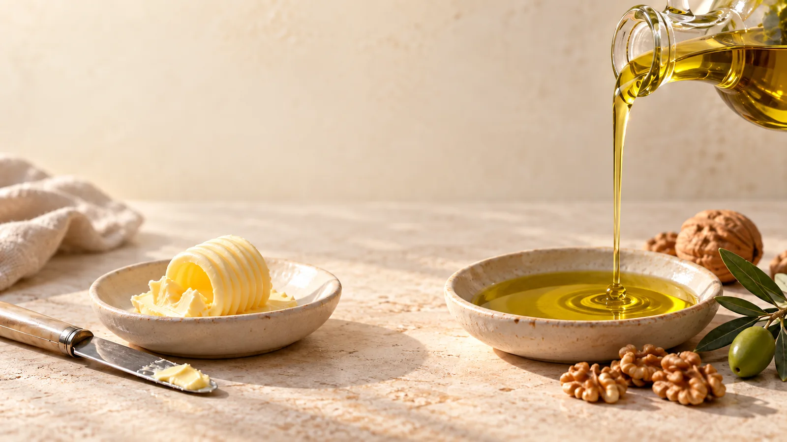
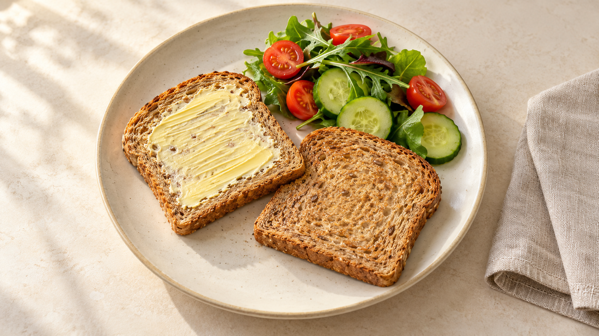

Учебная ситуация А
ХС-ЛПНПОдинаковый
Контекст пока не раскрыт
Что ещё важно знать?
Профилактическая кардиология
Ежедневный выбор.
Забота, которая остаётся с вами.
На показатель влияет больше,
чем то, что лежит на тарелке.
Генетические особенности могут менять удаление ЛПНП из крови. Некоторые заболевания и лекарства тоже влияют на липидные показатели. Рацион оценивают вместе с этим контекстом, а анализ не служит оценкой ваших стараний.
02 · Смотрим глубже
ЛПНП и ЛПВП — частицы,
которые переносят холестерин.
ХС-ЛПНП (LDL-C) — концентрация холестерина, переносимого ЛПНП.
Показан выбранный вид липидов, не полный состав частицы. Размеры и число символов условны.
Это показатели содержания липидов в крови, а не числа частиц.Обычная липидограмма не показывает число или размер частиц.
Смысл в том,
чем мы их заменяем.

Часть насыщенных жиров в рационе можно заменять ненасыщенными жирами из растительных масел, орехов и семян. Размер порции и рацион в целом тоже имеют значение. Речь о замене, а не о добавлении новых продуктов поверх привычного питания.
04 · Одно изменение в привычном блюде
Тот же хлеб. Те же овощи.
Другой источник жира.


Часть сливочного масла
можно заменить оливковым.
Заменяем источник жира, а не добавляем масло поверх прежней порции. Количество зависит от блюда.
Учебная иллюстрация принципа замены. Не персональная порция и не обещание изменения анализов.
 ОвощиБобовыеЦельные злаки
ОвощиБобовыеЦельные злаки05 · Обычная еда. Больше возможностей.
Овощи и фрукты.
Разнообразие в течение дня.
В супе, салате
или основном блюде.
В привычном завтраке
или гарнире.
Увеличивайте количество клетчатки постепенно, с учётом переносимости. При заболеваниях пищеварения и других медицинских ограничениях состав и количество продуктов подбирают индивидуально.
06 · Выбор на неделю
Источники белка
можно чередовать.
Бобовые, рыба, морепродукты и подходящие нежирные источники белка.
Выбор учитывает предпочтения, переносимость и медицинские ограничения.
07 · Смотрим шире одного продукта
Одна «идеальная» тарелка уступает
устойчивой привычке.
Средиземноморский пищевой паттерн можно адаптировать к доступным продуктам и знакомым рецептам. Его основа в сочетании привычек, а не в одном продукте или особом названии диеты.
Четыре вещи,
которые стоит проверить.
Пищевая
ценность
Сравнивайте на одинаковое количество
Учебная схема этикетки
Сравните содержание в одинаковом количестве продукта, если оно указано.
09 · За одной цифрой — разный контекст
Сначала видим показатель.
Затем узнаём то, чего нет в одной цифре.
Что ещё важно знать?
Что ещё важно знать?
Выберите одно отличие
При прочих равных курение повышает сердечно-сосудистый риск.
Один фактор помогает увидеть, почему ХС-ЛПНП недостаточно для общей оценки.
В каждой паре меняется один фактор; остальные условия считаем одинаковыми. Вымышленные ситуации, не индивидуальный расчёт риска. Внешность не определяет риск.
Общий риск и цель ХС-ЛПНП определяют
по всей клинической картине.
10 · Два направления одной заботы
Устойчивые привычки
и терапия по показаниям.
Назначенное лечение не отменяют самостоятельно.
Питание и БАДы не заменяют необходимую терапию.
11 · От общей информации к вам
Для понятного
личного плана.
Каков мой
общий риск?
Какая цель по ЛПНП
подходит мне?
Что изменить и когда
оценить результат?
Принесите имеющиеся анализы. Дополнительные исследования определяют индивидуально.
12 · Начать с выполнимого
Выберите шаг,
который впишется в вашу жизнь.
Мой первый шаг
Какой шаг подходит вам?
Выбор остаётся на этом устройстве до перезагрузки страницы. Две недели нужны для практики привычки, это не обещанный срок изменения анализов.
Главное, что остаётся с вами
Понятный рацион.
Личный контекст.
Решения вместе с врачом.

Медицинский курорт